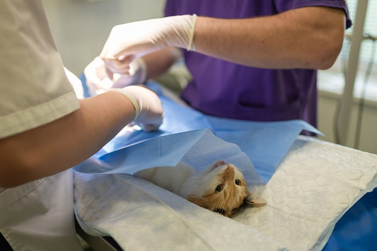

A clínica Gatinhuuus
Estamos ativos desde 2008, onde abrimos uma clínica pequena no bairro da Fazenda da Juta. No começo era bem difícil, era somente Helena e seu marido Gusman, que era seu sócio e fiel companheiro dos negócios. Os dois juntos atendia o pequeno estabelecimento de terça a domingo. Depois de dois anos os negócios deram lucro, com isso aumentaram o estabelecimento e além de clínica veterinária, expandiram um banho e tosa, além de vários produtos para os Pet's. E após seis anos abrimos uma filial em são Mateus, onde nossos lucros triplicaram e hoje em dia somos quatro filiais grandes, com 80 funcionários. Nosso objetivo é crescer cada vez mais. E tudo que não utilizamos vai para as ONGs "Gatos vira-lata "e"zoo doméstico". Se você quer ser um parceiro da causa acesse o site oficial, torne um membro e receba 30% de desconto na loja.
Cirurgias simples
- Remoção de corpos estranhos (brinquedos, objetos)
- Remoção de pedras na bexiga
- Correção de fraturas
- Saturas por corte
- Remoção de tumores.
Loremipsumdolorsitametconsecteturadipiscissfr A cirurgia em gatos é um procedimento delicado que requer anestesia geral. O veterinário pode recomendar que o gato fique sem comer por até 24 horas antes da cirurgia. Durante a cirurgia, o veterinário fará uma incisão mínima nos testículos do gato e removerá os órgãos reprodutivos. A recuperação do gato após a cirurgia é importante e pode exigir cuidados específicos para garantir uma recuperação ideal12.
Cuidados após a cirurgia

Assim como a cirurgia começa bem antes da mesa de operação, ela também continua com alguns passos após o procedimento. Quando um tutor leva seu amigo para uma intervenção, ele precisa estar atento para seguir as recomendações do pós-operatório. Algumas práticas que podem ajudar são:
- O animal precisará descansar para se recuperar.
- Durante as primeiras 24 horas, deve-se deixar o animal em um local aquecido, já que a anestesia pode fazer com que sua temperatura baixe um pouco.
- É provável que o apetite do animal diminua, mas aumentará progressivamente.
- Higienizar a área do curativo sempre que necessário,
- Aplicar as medicações recomendadas.